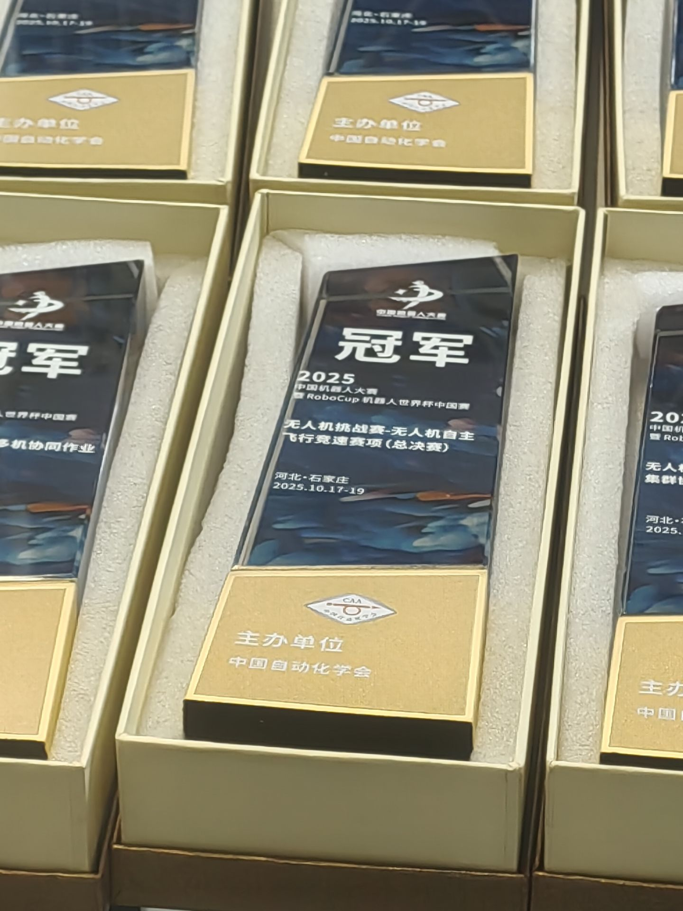

无人机自主飞行竞速
RoboCup 中国赛 · 2025.08—10
第一次承担核心开发
在智能赛的初次参赛之后，RoboCup 是我第一次作为核心开发成员承担主要技术工作的比赛。我独立编写基于 ROS / MAVROS 的任务与飞行控制程序，并负责障碍物感知与连续穿越策略的开发。
无人机需要识别场地中的圆环、横竖框和刀旗，在自主飞行中完成目标搜索、连续穿越与降落。感知结果需要转化为实际可执行的飞行动作，任务程序也需要应对目标选择、航向调整和目标丢失等情况。
- 个人职责
- 核心开发 · 感知、任务与飞行控制
- 团队成果
- 专项赛亚军 → 全国总决赛冠军
我做的部分
- 结合点云聚类、平面提取与 OpenCV 识别，输出障碍物类型和三维位置；其中刀旗采用简单的圆柱体识别方法，为连续穿越提供目标信息。
- 独立编写 ROS / MAVROS 任务与飞控程序，组织起飞、目标搜索、连续穿越与降落。
- 针对圆环、横竖框和刀旗设计通过策略，结合航向平滑、目标选择与丢失目标重搜，完成多种障碍物的连续飞行任务。
- 参与实机联调，将感知结果、任务切换与飞行控制衔接到实际运行中。
运行中的终端与 RViz
这段录屏记录了程序运行时的终端输出与 RViz 可视化，展示障碍物识别结果、位置反馈及飞行任务的执行状态。
从专项赛到总决赛
专项赛 · 山东烟台
2025 年 8 月的专项赛，我们遇到了各种各样的问题。现场发现了电磁场对 IMU 的干扰，点云处理也走了弯路：场地比较杂乱，先做平面分割会切出过多平面，给后续识别带来困难。我们后来才意识到，处理顺序应该是先聚类，再对各簇进行平面分割。
当时还没有做下视定位降落。带着这些尚未解决的问题，比赛过程有惊无险，最后竟然拿到了亚军。这个成绩超出了我们的预期，也让我们清楚地看到了接下来需要补齐的部分。
总决赛 · 河北石家庄
专项赛暴露的这些问题，在决赛中都得到了解决：处理了 IMU 干扰，将点云处理流程调整为先聚类、再分割平面，也补上了下视定位降落。2025 年 10 月 17—19 日，我们在全国总决赛中获得无人机自主飞行竞速赛项冠军、国家级一等奖。


截至 2026 年 11 月，这个冠军也是团队取得的最高荣誉。第一次承担核心开发工作，最终和队友一起拿到这样的成绩，我很开心。